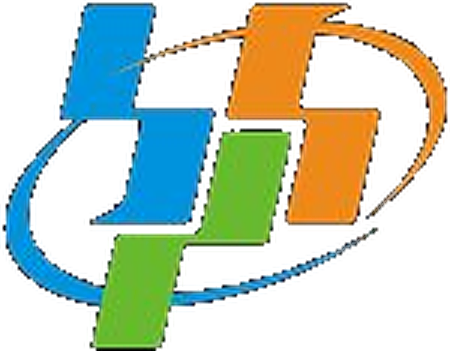
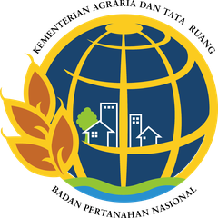
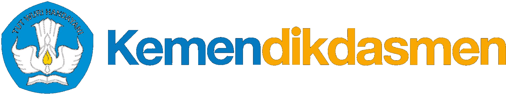

🌾 Rice Intelligence Infrastructure


Kami tidak menjual beras. Kami menjual kepastian tentang beras.
From Farm Data to Indonesia's Food Security
NusaPangan membangun identitas digital petani, lahan, dan hasil panen — siapa yang menanam, di lahan mana, dan berapa yang akan panen. Program MBG adalah pelanggan pertama kami, bukan satu-satunya.
Dibangun dengan data resmi dari



3petani tervalidasi lapangan
1,04 jt tonsurplus beras Banten
134 rb+satpen MBG DKI + Banten